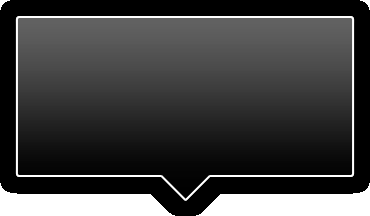
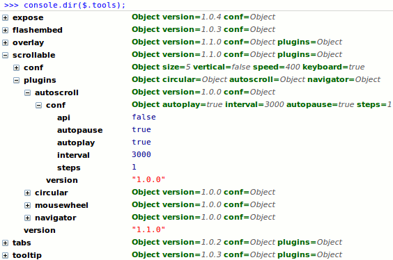
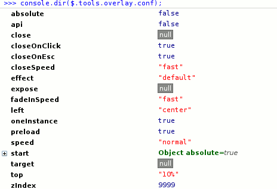

This document describes common practices for each of the tools such as:
jQuery Tools is a collection of the most important user interface components for the web. These are tabs and accordions, tooltips, overlays, exposing effects and scrollables. They can dramatically improve the usability and responsiveness of your site. They mainly focus on presenting information and visual appeal. After all, this is exactly what most websites desperately want: to present their content to the reader in an easy and visually pleasing manner.
Other JavaScript UI libraries focus on desktop-like features such as drag-and-drop, sliders, sortable tables or draggable windows. They are meant to build "rich internet applications" (RIAs) such as email clients, task managers, CRM software, image organizers or feed viewers. These kind of applications are very useful within a small group or when used in intranets; however, normal websites are very different in nature. Their purpose is to look good and present information. jQuery Tools are built exactly for that purpose.
It is recommended that you start designing your pages without using any JavaScript. There are many examples of highly functional, good looking and user friendly web sites that are not using JavaScript. The purpose of this library is to enhance an existing site with the great possibilities that modern JavaScript techniques has to offer. This is essentially the idea of "progressive enhancement" which is a common design pattern today. You should realize that highly professional sites don't overuse JavaScript just for the fun of it. Scripting is only used when it truly makes the pages more readable and user friendly. This is where these tools comes in to play.
This library is not a framework with a steep learning curve, lots of preliminary work and strict coding rules. You are not tied to any predefined HTML or CSS structures. You can include the library on your pages and start using it immediately. You can freely design the look and feel of your site or you can use the desing we have on our demos as a template.
These tools can be easily combined. Think of scrollables that trigger overlays or overlays that contain scrollables together with tooltips or whatever combination you can imagine. The possibilities are endless. And if that is not enough, you can harness the enormous power of the jQuery library. Many times you see complex JavaScript components implemented that could be done with just a few lines of jQuery code. For many websites, this may be the only JavaScript library necessary.
The old UNIX design philosophy "tools, not policy" is very important in web design.
jQuery Tools is primarly developed for "normal" HTML developers. You either have an existing website or start with a new one and these tools are used to enhance it. The goal here is to use "progressive enhancement" so that browsers that do not support JavaScript at all can still visualize your content.
These tools are not bound to any specific HTML structure. For example, tabs can be constructed from UL, OL, DL, DIV or TABLE elements. The same is true of our other jQuery Tools as well. The most important thing is to understand what you are doing and what HTML element is suitable for which specific situation.
All tools deal with a root element which is typically a DIV element, but it does not have to be. For example, a root element for an overlay is the one that contains all overlayed data. In every tool you can have any combination of HTML inside the root element such as images, forms, Flash objects and tables.
jQuery is a fast and concise JavaScript library that simplifies the development of cross-browser applications. All tools except flashembed are dependent of this library. jQuery skills are not required when using these tools. People have been using these tools without any prior knowledge about jQuery and even JavaScript itself. Of course, those skills would be a great help, but they are not required.
If you want to enhance your jQuery and JavaScript skills, the best things to learn when using these tools are definitely jQuery selectors and object literals. The first skill is used to select elements from the page to be enhanced with the tools and latter is used for configuring the tools. Here is an example that introduces you both of these skills:
Here we have two jQuery selectors. The first one selects all ul elements whose class name is tabs which are all contained inside an element whose id is "content". This query is similar to CSS selectors and if you know CSS, you will feel at home here. The second selector selects all div elements that are directly nested inside a div whose class name is panes.
Finally, we have a configuration object starting with { and ending with }. It contains a comma-separated list of name-value pairs. The name is followed by a colon which is followed by a value. The value can be a number, string, boolean, array, function or another object literal. Care must be taken to enclose string values in quotes. That is about it. You use this syntax to configure these tools.
It is important that you execute all your scripts only after the document is ready and scriptable. This can be done by enclosing your JavaScript calls inside a $(document).ready() block as follows:
This might be the most important thing in jQuery. Everything inside it will load as soon as the document is scriptable but before the whole page contents such as images and Flash are loaded. Everything that you stick inside its brackets is ready to go at the earliest possible moment. An unlike traditional old-school "onload" attribute in BODY tag you can have multiple document.ready blocks on your page.
You can also use a shorter syntax:
Which does exactly the same thing but is not so intuitive for a newcomer.
Cascaded Style Sheets (CSS) are the industry standard for styling the presentation and positioning of your elements. It is a powerful language which can do many things that surprise even experienced web developers. Learning this skill is definitely encouraged for every web developer.
These tools are very strict about not mixing any style declarations in the JavaScript code. You would think that this is an obvious coding principle and should be taken for granted but it isn't. Taking a quick look at the list of jQuery plugins reveals many tools that mix CSS into their code and hard code their style. Even if those styling variables are given as configuration variables, be it borders, images, colors, size or positioning, this leads to poor application design.
A proper tool should only rely on CSS class names - because they offer a much more flexible styling environment. Let's take tabs tool as an example. It offers a configuration variable called current representing a class name that is set to the currently active tab. Lets say you have set the value "active" as follows:
After that you can style the current tab with CSS as follows:
This means that you can have a whole CSS arsenal at your disposal while designing what the currently selected tab should look like. This kind of design principle is used throughout these tools. There are no hidden surprises in the tools related to styling. The tools are responsible for setting and removing classes from elements and after that all style is the responsibility of CSS. You can also customize all class names that these tools use.
For each tool we offer a default CSS file that you can use as the basis for your design. You can use the code, images and ideas from there for free. No obligations. They are fully documented and coded with good CSS practices. For example, you will never see this kind of statement:
and they will always be shortened to
This was just a primitive example of good CSS practice, but is used extensively in our CSS files.
Since you are not tied to any specific HTML/CSS structures, you have lots of freedom in designing the look and feel of the tools. When designing the presentation of these tools or basically anything on the web, you have three important but different approaches to choose from. Now think of designing a rounded box for any content or a tooltip background for example. You have to choose one design pattern and stick with it. Here are the advantages and disadvantages of these choises:
This approach depends primarly on CSS for the presentation. You'll use background colors, border colors and styling, web fonts and have only minimal use of graphics.
There are lot's of new features in the latest CSS version such as rounded borders, gradient borders, shadows and opacity, but these are not yet supported by every major browser. Some of the demos on this site uses these CSS3 features. If you are using Firefox 3.5, Safari 4.0 or other CSS3 compatible browser please take a look at the scrollable gallery with tooltips demo and click on the thumbnails. You'll see nice looking drop shadows on the overlay. As you can see you can create stunning looks by only using CSS and the design will also behave well on older browsers.
In this approach you'll typically use a single background image that is optimized for the purpose.
With this approach you'll use a lot of CSS tricks together with multiple background images.
jQuery Tools allows you to use any of above approaches and it does not restrict you to any hard-coded CSS coding or theming frameworks. Our demo area contains examples of all these approaches, but we mainly use the second approach. We typically use a single background image to demonstrate the tool in an appealing manner. We also offer you a lot of different general-use background images that you can use as the basis for your own design.
This website uses a lot of semi-transparent PNG-24 images which are not natively supported by IE6.
Because of this and many other huge limitations in IE6 all major players such as YouTube are dropping the support for IE6. Having said that we can get to the real point.
When saving your web graphics, you should really consider using the PNG-24 file format. It has support for alpha transparency. This means that you can use any kind of opacity setting on your image. It's like working with Adobe Photoshop's layers. You can layer multiple PNG images on top of each other and there is lots of room for experimentation. Below you can see two images. The gray box is a PNG24 image with alpha transparency.

If you are not using IE6 you can see the eye through the PNG24 image. Many sites don't yet take full advantage of this wonderful graphics format.
Alpha transparency is not natively supported by Internet Explorer 6.0. It is possible to make it work in IE6 by using the IE-proprietary AlphaImageLoader filter but, according to recent studies by Yahoo, this technology should be avoided. The problem with this filter is that it blocks rendering and freezes the browser while the image is being loaded; it increases memory consumption and is applied per element, not per image, so the problem is multiplied.
You'll definitely get the most reliable results by using GIF or JPG images in place of PNG images on IE6. You can override this in your CSS as follows:
The initial underscore is a hack that causes the CSS setting to be applied only to versions of IE older than 7. You may have the patience to do this. I haven't.
If you programmatically change the opacity of a PNG image in all versions of Internet Explorer it will cause ugly black borders around the image as seen on this screenshot:

This bug makes it impossible to make fading animations with PNG images in Internet Explorer. For this reason the Tooltip "slide" effect uses opacity fading in every browser other than in IE. This is the default behaviour but you can of course change this if your tooltip is not decorated with PNG graphics. Take a look at the Tooltip front page and look at the first demo in Firefox and in IE. The tooltip fades in/out in Firefox but uses the sliding effect without opacity changes in IE.
This "black box" bug can also happen in situations where a PNG image is placed on top of a transparent layer. I noticed this happening in this demo.
The first thing you must do is include the tools on your pages. You can place the following statement on your page and you are ready to go:
This will include the tools on your page with maximum performance. We are offering this high performance content delivery network (CDN) for free. You can use it in production environments. Enjoy!
If you are using Firebug or similar JavaScript debugger you can easily test which tools are included and what are their versions by running the following command from the console:
You'll see following kind of result

You can see each tool you have included and their versions. You can also see plugins and effects and their versions if you have included any from the download page. If you inspect a little more about these global settings you will esee each tool's default configuration values which are discussed more on the important global configuration section.
After the needed tools are included on the page, you need to initialize them. All tools follow the same pattern. Initialization always starts with a jQuery selector followed by the tool initialization function (constructor) and its configuration object. Here is an example using the scrollable tool:
This will make all elements scroll that are contained within an element whose id is "wrap". Next, comes a tool constructor named scrollable which takes a configuration object as an argument. This object defines the settings for how we want our elements to be scrolled. This example above is mainly the way you initialize tools.
The constructor will always return the jQuery object that is a collection of the elements that are selected by the selector. This is how all proper jQuery plugins are recommended to behave. Again we use the scollable tool as our example:
Althought you can change the default settings of the tools by supplyig configuration on the initialization phase you may be using the same configuration settings over and over again. In this case you may want to change the default configuration variables for the tools so that you don't need to specify same setting every time. Here is an example of an global configuration setting
After this you can simply do this
Of course you can override these default settings just like before
Every tool has a global configuration under $.tools.[TOOL_NAME].conf. For example $.tools.tabs.conf. You can change many global settings simultaneously by using jQuery build-in $.extend method as follows:
The list of various configuration settings can be found on individual tool's documentation page. One important thing about the global configuration is that it provides you a good source of "documentation". Try hitting following command into your Firebug console:
And you can see following information appearing:

Here you can see the available configuration options and their default values. Very useful.
jQuery Tools is the first framework to take full advantage of the jQuery's powerful chaining technology. Here is an example of a chaining pattern
You take a one or more div.scroller elements from a page and make them scrollable. The scrollable tool has only the absolute nessessary features to make things scroll. If you want to have more features you can use plugins. In this example we used infinite plugin to make an infinite loop for the scrollable items so that there is no end or beginning for the scrollable items - you can scroll back and forward infinitely. The autoscroll plugin makes the items scroll automatically without any user interaction.
You can have multiple scrollables on the page and they can all be activated with this single line of code. All plugins may have their own set of configuration variables and they can also be set from the global configuration.
Almost every tool has a few plugins that can be downloaded from the download page. This kind of design pattern makes the overall file size dramatically smaller because you can only use the things you need. It also makes the code more organized and easier to understand. In programming world this pattern is called a decorator pattern which is at the heart of jQuery: "take a bunch of elements from a page and do stuff with them". jQuery Tools takes this seriously and step further than other libraries.
Every tool has a build-in plugin architecture and you can easily write your own plugins.
Tabs, tooltip and overlay has an unique "effect framework" which enables you to change the default behaviour of the tool. Here is an example
This configuration makes the overlay use an effect called "apple" which makes the overlay work as you may have seen on Apple's website. The purpose of the effects is to change the default behaviour whereas plugins will enriching or adding new features. In case of the overlay the actual tool provides the basic functionality of overlaying such as initialization, keyboard and mouse interaction and document masking (with expose effect) while effects duty is to only perform the opening and closing actions of the tool. This makes it fairly easy to implement different kind of effects. This design pattern makes the code more organized and makes the overall file size smaller just like plugins do.
Some tools have many built-in effects and some have only one. You can also get more effects from the download page. You can set the default effect in the global configuration so that you don't have to explicitly supply it to every initial configuration.
Look for each individual tool's documentation for more information:
Note: it is possible to define custom configuration variables for your effect by extending the global configuration. Say you have a custom overlay effect with the configuration property explosionSpeed; you can give it a default value as follows:
After that the users can either use the default value or override it from the overlay configuration.
Every tool has a well defined Application Programming Interface (API) that you can work with. This is one of the greatest strengths of this library. You can call tool methods and access their properties. The internal state is hidden and private variables are not accessible by the outer world which is what you would expect from good programming practice. Each tool behaves in a similar manner.
The main goal for the API design is that there should be easy access to the tools API and at the same time each tool should behave like all other jQuery plugins do.
As seen above, when a tool is initialized, the return value is, by default, a jQuery object. This is what jQuery users are accustomed to and it should be respected. However, there must be an easy way of accessing the API upon construction and all tools supports an api property as follows:
This is a very useful shortcut and provides quick access to the API. After you have the API available, you can start taking advantage of the powerful methods at your disposal. Here are a few examples:
It is natural to have a tool-specific API available when working with a certain widget. There are no redundant methods and typically you won't need, for example, the DOM manipluation methods that jQuery offers. You will want to stick with the methods that relate to the task at hand.
If you are using jQuery Tools plugins you need to supply the api parameter for the last plugin in the initialization chain. For example
Every tool and plugin supports this api paramter.
Another way of grabbing the API is by using the constructor again once the tool has been initialized. Here is an example:
If you have multiple scrollable elements on your page and want to access a particular API, you can supply do it in one of the following ways:
Note that the index argument is always zero-indexed, i.e., the first scrollable is located at scrollable(0), the second at scrollabe(1), etc.
After you have the API available, it behaves in a way that a "normal" programmer (or non-jQuery programmer) is accustomed to. There are getters, setters and methods that invoke actions. Invoking methods will always return the API itself so you can perform method chaining. For example:
Here the click method returns the API so you can continue with other tab methods such as getIndex. All tools support this kind of method chaining, just as you would expect from a jQuery plugin.
In addition to normal methods, you also have the ability to register callback functions from the API which leads to the development of jQuery Tools plugins, but more about that later. Here is the scrollable tools API for you to study as an example.
If you are an active user of the jQuery UI library, you may want to get access to the API in a way that is compatible with that library. In jQuery UI, you can grab the API with the data method. This similar mechanism is fully supported by the Tools since its initial version. For example:
You can see that this is a bit more verbose than using the api property but this is still supported for your convenience.
jQuery UI has a so-called "unified API" which uses the following syntax for invoking methods:
API methods are called by supplying the method name as a string followed by method arguments. This kind of syntax is not supported by the Tools. To be honest, I think that this kind API design is fundamentally wrong. It has the following problems:
These tools have extensive support for callback functions. These callbacks are functions that you supply in the configuration and which are called when something critical happens to the tool, such as an overlay is opened. Callback functions are your way to customize and extend the default behaviour of each tool.
When you are not happy with the configuration possibilities, you can use callback functions. These functions are just like other configuration variables except that the values are actual functions.
These tools provide both the onBefore event which occurs before some action is taken and the on event that occurs by the time (or after) an action takes place. You can have custom functionality bound to these events. All tools provide such events and they share a common naming policy. The onBefore event provides you with the possibility of cancelling the action
This example demonstrates the onBeforeClick callback function for tools.tabs.
In every callback function the this variable is a reference to the programming API of the tool. In the above example this is a reference to the Tabs API. Again, this is what average programmers are used to and the tools follow this standard programming practice.
In the above example, we supplied our callback function in the configuration when the tool was initialized. You can supply callback functions from the the API as well. In fact, you can supply multiple callback functions for the same event this way. For example, you may have multiple onBeforeClick listeners which are all triggered when a tab is clicked. Here is an example of registering callbacks with the API:
Again, inside the callback function the this variable is a pointer to the programming API.
Since version 1.1.1. every supplied callback function receives the jQuery.Event object as the first argument for the callback function. This event object standardizes the event processing according to the W3C standards. Here are some things you can do with this object:
Within the scope of jQuery Tools, the preventDefault() is identical to returning false from the callback. This is just a matter of style where the preventDefault() is the modern manner of cancelling.
You can get the handle to the actual element that fired the event with var element = e.originalTarget || e.srcElement;. For example, you can get a handle to the scrollable navigator item that was clicked inside the onSeek event.
Sometimes you want to remove your callback function from being used. This can be done with the unbind call. Here is an example:
If you want to remove only a certain callback, you need to specify the callback for the tool with a custom name. This can be done with the bind function as follows:
Now this particular callback can be removed as follows:
Since jQuery Tools 1.1.1. The bind and unbind methods are available for every tool.
You can use the bind function to supply the same callback function for different events. For example:
The names of the events are separated by spaces. You can also supply a custom name for each of the callbacks such as onLoad.my onClose.my. You can use the unbind method to remove all callbacks at the same time by calling unbind(). In the case of the previous example you would do so by calling unbind(".my").
Please note that the event object, unbind and bind methods are for experienced scripters only. An average user will most probably never use them.
Some programmers may argue that a better solution would have been to implement "classes" that users can "extend". Trust me, it's not. JavaScript is an inherently functional language, not an object-oriented one. Trying to mimic classical inherintance leads to poor design and makes programs longer and harder to understand. This is especially important in jQuery development because this library itself is highly dependent on callbacks and does not support any kind of inheritance. Functions are an easy, light-weight and effective way of extending behavior. Even newcomers can use them without understanding the anatomy of the JavaScript language.
It is possible to implement jQuery plugins that are tightly integrated with jQuery Tools. These plugins would typically alter the default behaviour of the tool or they can add new functionality. jQuery Tools plugins are authored just like normal jQuery plugins with the exception that inside your plugin you'll get a handle to the Tools programming API and possibly supply callback functions. The fact that the tools can have an unlimited number of callback functions registered is the backbone of plugin development. Here is a simple skeleton for a plugin that will track Google Analytics each time a tab is clicked:
After you have this plugin included on your page, you can use the plugin in the following manner:
If you are a jQuery plugin developer, you can see that this follows the "standard" way of developing plugins. The interesting part is the retrieval of API with the var api = $(this).tabs(); command. Instead of constructing new tabs, it will return the API. This is because tabs were already constructed. In fact our previous setup requires that the tabs are initialized before the analytics plugin, so you cannot write:
Here is a solid example about developing jQuery plugins. There are many plugins available on the download page. You can take a look at their commented source code to get more understanding about the plugin development.
jQuery Tools can be used together with other libraries and plugins. Both jQuery and non-jQuery libraries can be included on the page and they should work together. The only thing that may cause problems is that you cannot use jQuery plugins that have the same name. You cannot, for example, use jQuery UI tabs together with jQuery Tools tabs since both are using the same name. But you can use any other UI widget without problems. The same is true for any other jQuery plugin you can find.
If you are using other JavaScript libraries such as MooTools, Ext JS or Prototype together with the Tools, then you can be even less worried about name conflicts. If your non-jQuery library uses the dollar sign $ as the prefix (or namespace) for the plugin names, then you should look at jQuery's possibility to override the $- function.. jQuery Tools supports the switching of this namespace.
jQuery Tools have been proven to work with following browsers:
If you encounter any problem with jQuery Tools and any of these browsers, please report it to the jQuery Tools forum.
You must have noticed that this project is hosted on the Flowplayer website. This is because some of the tools were initially developed for making widgets that work well with video sites. Scrollable was made for building playlists and overlay was made for showing videos over other elements on the page. Little by little those widgets matured to the point where they are now.
Today Flowplayer and jQuery Tools have nothing specific to do with each other. Flowplayer is a video player and jQuery Tools is a generic user-interface library for the web. Of course, they can be used together because both are well behaving pieces of software. Here is a quick example of how videos can be overlayed on a page:
Flowplayer is Open Source software licensed with the GPL 3 open source license. There are also commercial licenses that allow us to focus full time on the development of tools and the player itself. They also allow us to provide the free content delivery network for the users of jQuery Tools. There is currently no possibility of expressing your satisfaction through making a donation; however, if you are interested on showing videos on your site you could consider purchasing a Flowplayer commercial license.